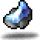

서쪽바위산 4
시작 주먹펴고 일어서
페리온 → 서쪽령 → 서쪽바위산 1 → 2 → 3 → 4

방구지지THIRD JOB ADVANCEMENT QUIZ
문제에서 기억나는 단어만 입력해도 정답을 찾을 수 있습니다.
SECOND JOB ADVANCEMENT
레벨 30 달성 후 먼저 1차 전직 NPC에게 퀘스트를 받고 이동하세요.
3차 전직 퀴즈 62문항
2차 전직 위치 참고: 네이버 블로그 원문 ↗